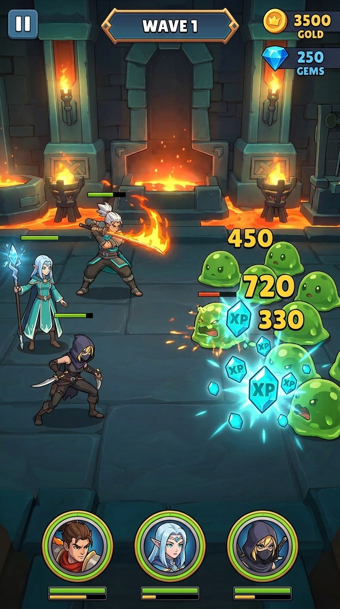

Bran
Warrior · FTUE
Stoic, dependable, takes the front. Anchor of every starter squad. Inherited his father's hammer.
drag to evolve ★1 → ★5
Casual-mobile RPG.
You pull weapons. You bond with heroes.
prototype build · 5-wave stages · 3-boss rotation · forked 2026-06-01


Wittle Defender ∩ anime-curious. Casual-mobile RPG players who'd happily install a hero-collector but want more story than the genre normally delivers.
Wittle pulls heroes. We pull weapons. The roster is locked at seven — you master a specific cast instead of chasing a slot machine. Time invested becomes character, not duplicate inventory.
Equipment-gacha is precedented (Archero $263M). Story-locked roster is unprecedented. The combination is the moat.
Forge weapons.
Bond with heroes.
50-game research set, 170 Sensor Tower API calls. Hero-gacha + auto-battler is crowded (AFK Arena, Honkai Star Rail, Wuthering Waves). Weapon-collection is rare and scattered (Archero is the closest analogue but is bullet-hell, not RPG). No competitor combines locked roster + weapon gacha + anime personality + casual auto-resolve combat — the lane is empty. Full doc: docs/research/2026-05-28-competitor-landscape-synthesis.md.

A slot-machine Forge Wheel drops weapons for your locked roster. Pull a Common, a Rare, an Epic. Forge them up. Star them up. The economy revolves around weapons, not heroes.
Three heroes deploy per stage, drawn from a locked cast of seven. Each weapon ties to a class and an element. The squad you choose is the strategy.

Side-view auto-resolve combat. Five waves per stage; boss on wave 5. Mid-wave the kill meter fills → combat pauses → pick a Forge Draft card → resume. Single-tap ultimates.
Seven heroes. Locked. The cast you master, the bond you build. Equipment is the gacha. People are the lore.
Warrior · FTUE
Stoic, dependable, takes the front. Anchor of every starter squad. Inherited his father's hammer.
Mage · FTUE
Quiet prodigy. Frost-bolt scholar with a secret meteor lineage. Signature arc unlocks her tree.
Rogue · FTUE
From the shadow corps. Critting on his off-hand is the love language. Pairs explosively with Elara's chain.
Lance · Stage 2
Descends mid-stage in a scripted-defeat cinematic. The FM-8 hero-bond probe.
Rogue variant · TBD
Personality + identity to be designed. Mid-game unlock.
Mage variant · TBD
Personality + identity to be designed. Mid-game unlock.
Assassin · TBD
Personality + identity to be designed. Late-game unlock.
Hero-collectors win on power-fantasy variety; we win on attachment. A locked 7-hero cast means each character can carry actual personality + story without diluting it across hundreds of pulls. The pre-mortem flag here (FM-1) is "players raised on Archero / AFK Arena expect to collect heroes too." Mitigation: weapon gacha satisfies the slot-machine itch, while the locked cast is sold as "your mains" — the language of competitive games, not gachas.
┌──────── HOME ────────┐
│ pull → equip │
│ briefing telegraph │
└──────────┬──────────┘
│
▼
┌────── STAGE ─────────┐
│ W1 → W2 → W3 → W4 │
│ ↓ mid-wave: meter │
│ ↓ Forge Draft pick │
│ W5 = BOSS │
└──────────┬───────────┘
│
▼
┌──── reward / wipe ───┐
│ +Ember +stage++ │
│ heroes restored │
└──────────┬───────────┘
│
└──→ back to HOME
Five waves per stage. Boss on wave 5. The boss rotates by stage: Slime King → Iron Golem → Arcane Lich → repeat (with per-stage scaling). Slime heals to 50%, Golem windups + AoE-slams, Lich phase-shifts at 33% HP. The Forge Draft modal opens mid-stage when the kill-meter fills; on the W5 boss wave it shows 5 cards instead of 3. Heroes restored to full HP at the start of every stage. Wipes route back to a loadout-adjust screen — no retry penalty.
| Pair | Compound | v1 effect (Numbers Policy) |
|---|---|---|
| 🔥 + ❄ | Firestorm | +20% squad ATK |
| 🔥 + 🌪 | Wildfire | +15% ATK · +10% crit |
| 🔥 + ⚡ | Plasma | +15% squad crit |
| ❄ + 🌪 | Blizzard | −20% enemy attack speed |
| ❄ + ⚡ | Glacial Storm | +15% squad ATK |
| 🌪 + ⚡ | Stormfront | +25% ATK vs ≥3 enemies |
Earth-pair compounds (Volcanic / Permafrost / Sandstorm / Magnetic Storm) gate at Stage 10. The first Catalyst reveal lands organically around Stage 4-5: Forge Wheel pull #1 is scripted Fire-Bran-class, pull #3 is Ice-Elara-class. Until then, starter weapons are non-elemental — preserving the stage-1 neutrality contract.
Six key moments from the prototype loop, drawn during the 2E mockup pass. Click a thumbnail to swap the featured beat.

Stage 1, mid-wave · 3 heroes vs minions
Side-view auto-resolve. Heroes attack on their own timers. A kill meter fills with each kill; full meter pauses combat for the Forge Draft. Single-tap ultimates fire when each hero's gauge fills.
Hot-fork e958745. Frozen playtester build preserved at ../2_Weaponcraft_Godot/.
10/10 tests green. New combat-interface methods landed (get_atk / get_crit / get_ult_rate / get_all_tags / get_hp_bonus).
HOME → STAGE → BOSS loop playable end-to-end. 368 tests green.
Shards-into-rarity + dupes-into-stars + 12-weapon catalog. 415 tests green.
Full HP at stage start, softer stage curve, fixed weapon detail panel, Lich phase-2 nerfed. 423 tests green.
Bosses retagged Fire/Ice/Electric/Wind. Deterministic StageAffinity. Pre-stage briefing telegraphs. Defeat → loadout (no retry modal).
Ember = the pull currency (5/pull, earn from boss+win). Gems → forge currency (star-up). Dupes → gems. Save v3 → v4.
Element-pair squad synergy. 6 FTUE compounds + 4 Earth-gated. MVP-6 simple (stat-modifier bag). Spec locked, plan locked, code in-flight.
The last Forge Wheel polish: a 0.6s anvil-strike reel on pull, skippable.
Stage 2 scripted-defeat cinematic. Probes hero-bond + build-investment.
Spark-chain mechanic + small-B Meteor talent tree. FM-8 hero-bond probe (option B).
Phase-1 Forge Wheel unlocks: part-pull (150 gems) + 5-tier Forge Math + Earth runes.
Counter-build + Ember economy merged to main 2026-06-08. Combat hero-card redesign (weapon row + circle-mask portrait) landed on the Catalyst branch 2026-06-09. Catalyst v1 design spec locked. CLAUDE.md + this deck spec authored.